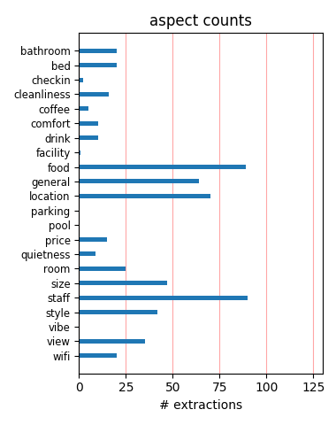
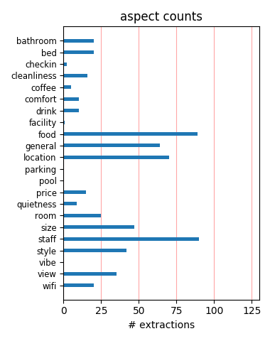

The Marriott Grand Flora in Rome is a beautiful hotel in a great location in Rome. The hotel staff was great! Hotel restaurant was very nice, but so many other fantastic restaurants in the area. I highly recommend this property if you're staying in Rome.
Stayed here for 3 days in August. Very nice hotel with all the conveniences of American hotels. The room was a bit on the small side but very nice. Short walk to the Spanish steps and lot's of good restraunt choices near by. Would definitely saty here again.
One of the best hotels in Rome, great location! The staff was wonderful! If you was american amenities in Italy stay here. It is within walking distance of historic Rome just down the street from the American Embassy and across the street from the Borgese Gardens
This Marriott was really great - it felt more like an Italian brand rather than American; not that I am anti-American hotels, it's just that we like to get the local flavor. The only downside was the restaurants on this street were either way over-priced or too touristy.
went to rome with my husband for 5 nights. the hotel was lovely even though it was expensive. there wasnt any tea and coffee making facilities which i found unusual. the girl at reception was very helpful and gave us a map and circled the best shopping area lol. would definately go back.
I found this hotel on trip advisor. I was originally scheduled to stay at another well know hotel that the reviews were not so good so I changed to this property. I loved my room. Reception and check in were excellent. In room dinning and the Cabiria Restaurant had great food and service. All good!
We stayed there on the last leg of our 18 day vacations through italy. The hotel was nice, the breakfast was excellent, the service was good. We feel the it was over priced for what we got compared to other places. I would stay again if the price was right we paid a 5 star price and got a 3 1/2 star experience.
Disappointing. Room cleaned very late in day. Music from bar can be heard at night. Breakfast buffet is supposed to end at 10:30 a.m. but they do not replenish the buffet after 10 even when there is no bread left and start taking down tables at 10:15 while people are trying to eat. This is not how a first rate hotel treats guests!
We stayed at the Marriott Rome Flora for 3 nights in September. The hotel is in a wonderful location on the Via Veneto. While not super luxurious, the room was cozy, comfortable and very clean. The service was top notch. Loved sitting on the roof for breakfast....the views were absolutely breathtaking. I would definately stay here again.
Me and my husband stayed at the hotel for 4 nights abd 5 days! we absolutely loved our warm stay. The staff was kind, warm and hospitable. We loved the rooms! they were typical english rooms. It was our honeymoon so, we loved the cosy feel of the place. We had a great time. The complimentary breakfast was also well arranged and delicious.
It's what you should expect in Rome...expensive hotels...small rooms. But it was clean, quiet (asked for an interior room away from the street), and comfortable. Front desk staff was helpful and accommodating. Free internet was nice. Nice location - across from restaurants, shopping, metro station; pleasant walk to Spanish Steps - 10 mins or so Would go back.
We stayed here using Marriott points for our last night in Rome. We found the location to be very convenient. The room was spacious, clean and had that old world charm. The breakfast buffet was fabulous. The dining room is on the top floor overlooking all of Rome. It was absolutely beautiful. And the food was great too :) We would stay here again if we get the chance!
My husband and I stayed at the Grand Flora on our honeymoon. Though, we are American and maybe it was to be expected...the staff was incredible rude to us. Any question about restaurants, shopping, etc. was a complete bother to the front desk. I am a Marriott Gold Member and was refused a room upgrade...we had a lovely view of the side of a building and garbage dumpsters.
I just reurned from a great stay at this hotel. The room was nice. The location is excelent. The service was great. A Concierge named Danielle made a dinner reservation for us at Da Bolognse 30 days before our arrival. Another Concierge named Bernardo was very nice, and sent us to some great places. The view at the rooftop at breakfast every morning was fantastic! I will go back.
Stayed here in Feb. 2008. The rooms are not a typical Marriott room. They are worn but still nice. The staff was helpful. Great location. It was in walking distance of all of the main sites. Lobby was nice. Hotel bar was great and the bartender was fantastic. We had the free breakfast buffet. I would not pay for it but since it was free we ate at it a couple times during our stay.
This Marriott was wonderful. Everything from the location, the hotel staff, the free internet, the cleanliness, and the roof top breakfest. The hotel is within walking distance for everything especially the spanish step and the trevi fountain. As a Gold member I would recommend this hotel. The only recomendation would be to upgrade the TV's and add CNN as one of their channel selections.
Good location - steps away from Villa Borghese, major Piazzas, walking distance to Spanish Steps, Harry's Bar, and Trevi Fountain. The room and the bathroom were tiny in comparson to the other hotels. A bonus is that they give you free internet access - that's unheard of at most hotels in Europe. This hotel is on Via Venetto which is home to most of the 5 star hotels in Rome. I would stay here again.
We spent three great nights at the Grand Flora. To start with, the location was superb. We saw every typical tourist sight there is, and never took a cab. With that said, the hotel is not in too busy an area. The rooms are spacious by European standards, kept very clean and are maintained well. The staff was professional and helpful. The management of this hotel is firt class. Bottom line - stay here.
After having stayed at a sub-par hotel for 5 days (hotel delle nazione) we were ready for a nice hotel and the Marriott did not disappoint. They were wonderful and gave us a very nice upgrade overlooking the gardens. Because they are an international chain - the rooms are nice-sized (much bigger than the European standard) They really get it when it comes to customer service - we had an enjoyable stay.
This hotel's location is excellent for walking to most of the sites in town. Those that are not in walking distance can be reached by the subway, which can be accessed across the street. (The entrance tunnel to the subway is very long, maybe a block!) For Americans, keep in mind that this hotel is much more European than many Marriotts, especially when it comes to breakfast. Everything about my stay perfect.
Myself and my family stayed here for a second time (first being without kids) and it was perfect. We had a suite which was fantastic and spacious and enough room for us all. The kids got a little present each and we also got a bottle of champagne and chocolates for us adults in our room. The staff are also great especially Marco who organised everything for us. Overall a great stay and will definiately be back.
It was our first trip to Rome, and being a Marriott guest in the US we knew we would be treated in the same quality...... and we not disappointed. We stayed before our Mediterrean cruise and afterwards, as well. The front desk was always helpful. The people friendly. You must have a meal in the roof top restaurant. Eat out side and just take in all of Rome... When we return to Rome, we will go back to the Grand Flora Marijane & Hank
My wife and I stayed here using points for 5 nights and it was a great experience. Unlike other hotels when you stay with points, the staff was very friendly and even gave us a room upgrade. The room was clean and quiet. The breakfast was very good each morning with a great view from the roof. The location is great as it is fairly close to the Spanish Steps metro stop and there a number of bus stops just outside the hotel that can get you pretty much anywhere.
The hotel is attractive and conveniently located, but nearby restaurants are pricey. We were fortunate to stay for free using Marriott points. Perhaps that is why they gave us a very small room. The bathroom was small too. Linens were not luxurious. They do not have king size beds and the 2 beds kept sliding apart. They did let us check email free on their computers. The doormen and the concierge were barely helpful. Disappointing service. If we had to pay, we'd check out the Westin.
Everything about this hotel is rather good. But the key word in this phrase is "rather". After two stays I can remember nothing that could make me think of Marriott Roma when planning next stay in Rome. Even their fabulous roof terrace with a breath-taking view over the whole centre of Rome left no memories. Maybe because of 2-stars breakfasts with 2-stars service. And maybe that's the reason why this Marriott is the only 4-star hotel among all the other 5-starsMarriott Grand hotels.
We booked through Costco travel. The Grand Flora Marriott was an elegant hotel. Beautiful marble, quiet, wonderful breakfast, served on the roof overlooking the rooftops of ROme. Absolutely beautiful view. Clean spacious rooms. Great service. Restaurants and shops within steps of the hotel. Lots of cafes along with upscale restaurants. Close to the Spanish Steps. Highly recommended. Next to Borghese Park and Via Veneto. Took a day trip to Pompeii, Vatican picked up in front of hotel.
We stayed two nights. The hotel is a beautiful old hotel. Similar to those in San Francisco or Washington DC. Beautifully appointed, clean and with a great view of the area. The elevator is very small. The staff were most accommodating and checked us in early and promptly. The internet and Wifi service was great. Breakfast was included, but the American version is not good. Eggs were runny and most of the food was cold. The European breakfast was very good. The dinning terrace was closed when we were there.
Although this hotel is bit pricier than others, it's truly an excellent choice if you are traveling with your kids. We recently traveled with our 15 & 11 yr. old kids. They were happy to get an "american" size room with a huge sitting area (presidential suite). The staff was incredibly helpful and professional. The location was ideal. We were close to the park and a beautiful part of Rome that was just a bit away from all the crazy traffic and all the overwhelming tour groups. I would certainly stay here again!!
I was impressed by this hotel from all aspects. I had the most amazing sleep in my life here. The bed was so comfortable, pillows were like from the TV advert. The curtains were those heavy ones which give you a feeling that is a night even it is a lunch time. The breakfast place in the top floor has a terrace with breathtaking views. It is conveniently located in walking distance from all Roman sightseeing hot spots. It is not a cheap hotel but definitely worth. I can't imagine anyone would get disappointed here!
Very nice location; the Via Veneto is the Roman equivalent of Rodeo Drive in Hollywood, or the Champs Elysee in Paris. Very expensive shops in the area. It's not in the center of all the touristic sites, but not too dreadfully far from a metro station either through which you can access the rest of Rome. The rooms are rather small, but nicely decorated. The bed was fairly comfortable. The staff was very friendly and attentive to requests. The music in the bar was rather loud, which made conversation somewhat difficult.
We arrived at the hotel at 8:30 AM and they gave us a beautiful room on the top floor with two balconies and a view of the Roman Wall. We also were using points and were treated great. The room was large with a king bed. They recommended some great places to eat that we visited and the staff always went the extra mile. We had breakfast included, but if you have to pay it is about 30 E a person and rather high. We were with friends and I got them to give them 50% off the meal. Pays to ask. Will stay here again next year.
Just returned from a 4 night stay. Overall a very nice hotel in an upscale location. It's located at the top of via veneto which is lined with upscale restaurants and hotels. Easy walk to Berbirini metro stop and across the street from a bus stop. Double room was spacious and clean. Bathrooms were marble and clean. Breakfast had a very good variety of food. Staff were helpful. Didn't have a chance to check out the fitness facility. Only a couple negatives...desk chair was wobbly and nearly broken. Internet didn't work in my original room.
My wife and I stayed the Marriott Grand Flora for our Honeymoon. The service was fantastic and everyone spoke English which was a huge help for us. We told the front desk that it was our honeymoon and they upgraded us to a Jr. suite and then sent a bottle of Champaign to our room. Alitalia lost our luggage and the concierge did a great job talking to the airline to help us get out luggage back. The room was a good size with a comfortable bed, and all the amenities you would expect form a Marriott. Overall we were very pleased with our stay.
I stayed at the Marriott Grand Hotel Flora for a company business meeting. We were a group of 12 people and we also used the hotels meeting facilities. The room was well equipped and comfortable, including free internet, which was very important to me. The meeting room was well prepared including the proper seating arrangement, and the relevant audio visual equipment. Besides the business activities, the hotel is very well located at the top of Via Veneto, and has a rooftop terrance on the seventh floor with an amazing view of the entire city.
The folks that work here are so great. Very accommodating, kind and helpful. I got the free breakfast with my upgrades. The room is typical European size, but the real issue is the location. Harry's Bar is great across the street and the Spanish steps are a short walk but any of the other "touristy" destinations are going to be somewhat of a walk. I love a long walk and exploring, but for others hoping for quick easy trips it may not be the ideal situation. I did not use the Metro, but there is a metro stop less than 4 blocks away - very close!
The Grand Flora is an old style hotel that has been made over to provide all of the modern amenities. This is one of the very few Category 8 hotels in the Marriott chain. It is located in one of the most scenic areas of Rome and is conveniently located to many of the sights that most visitors would want to see. The service was fantastic. Everyone form the doormen to the concierge could not have ben more helpful as they went out of their way to make this a most pleasant stay. We would higly recommend this hotel to anyone considering a visit to Rome.
Perfect location for our business travel group. Marriott Grand Flora met our expectations in all categories: Close proximity to the airport (40 Euro or less by Taxi), easy walking distance to the center of Rome via Metro tunnel (across the street), comfortable rooms, large bed, stylish rooms with good working area. Breakfast buffet included and a reasonable internet fee (9 Euro for 7 days). Professional staff and helpful Concierge. Rates are competitive and Marriott has the edge with this hotel. Our next hotel reservation will be at the Grand Flora on our return trip.
We used Marriott points to book two room at the Marriott Grand Flora for three nights. One of the rooms was smaller and in the interior; the other was very spacious and on the street. The room on the street was a bit louder. Because we used points, breakfast was not included. The hotel is on a lovely street near the Borghese Gardens but easy to walk to sites or to catch taxis. The staff was helpful and we liked the location. It was particularly nice to be able to use points since Rome hotel rooms are pricey and generally small - by contrast, the Marriott was very nice.
We used points for 2 rooms at the Marriott Grand Flora for 4 nights in June. Check-in was easy and our rooms were very clean and comfortable with all marble bathrooms. Breakfast on the roof terrace overlooking the city was exceptionally beautiful, although upon arriving each morning it was difficult to find a clean table to sit down to. We found the location to be very good as we walked to sites with the exception of the Vatican which was a 10 euro cab ride. We should have allowed more time in Rome, although no matter how long of a stay there would still be more to see.
We stayed for a long weekend here whilest my wife was in Italy for business outside the city. The reception was great we felt relly welcome. Staff very helpfull and friendly. The room was nice, overlooking the via vento and not noisy. The bathroom was very nice. room was not big but very comfortable. Breakfast was great, good food while overlooking the city from the roofterras. good capucinos. Bar was very welcoming with good service also while sitting outside late in the evening. No complains here! Wwe while return for sure when my wife has to to be in Italy again for work.
Just amazing....top to bottom, gorgeous hotel, security at night. Delicious breakfast on the roof in the AM. Its Europe, so the rooms are small. Dont expect to stay in a large suite it may be a Marriot, but its still in Rome. Small Rooms VERY clean though. Gorgeous bathrooms. Located on Via Venetto which is very popular with the nicer hotels and restaurants. Although not my favorite restaurants on the strip. Very commercial. Another great thing about this Hotel is it is located across from Villa Borghese which I a beautiful Park, if you get a decent room, you may have an amazing view.
The Marriott Gran Flora is a wonderful hotel. The rooms, staff and food are excellent. Breakfast is served on the top floor of the hotel. You may eat outside with outstanding views of the city or inside. The breakfast is the most generous in regard to selection and fine quality. Each day for no charge you may have a picnic lunch to take if you wish. The Gran Flora located on Via Venuto is surrounded by excellent restaurants-Harry' Bar and Grille and many others. You can easily walk to the Spanish Steps and if you are in good shape Trevi Fountain. Other sites are a short taxi ride away.
The Marriott Flora is a very nice hotel. It's a little pricey however consider the money you will save by not having to take a taxi ANYWHERE except the Vatican. Service was very excellent, friendly staff etc. I would suggest eating at restaurants off Via Veneto not because they are less expensive but because ther are so many great restuarants off the main Via. If you are a frequent traveler and are familar witrh Marriot's level of service you will not be disappointed. I also would recommend to shop for snacks and beverages down the escalator accross the street it will save you alot of $$$. AMM.
The hotel was beautiful, and the room was a decent size. Our stay was paid via Marriott rewards points. Location was decent, we found everything within walking distance. We are both in our low 30s and enjoyed walking around. We walked to everything except the Vatican, in which we got the Subway which is approximately 10 minute walk. A cab is needed to go to the train station if you have a lot of luggage, but walkable if you just have carry on sized luggage. The free internet, and good staff service was great. Not sure I would spend $600+ a night to stay here, but with the reward points it was great!!
This was our first trip to Rome and we wanted to stay someplace nice. Marriott Grand Flora is very nice. We stayed using points and were upgraded to a Jr. Suite - very, very nice. Hotel is in great upscale location. Plenty to do within walking distance. Good selection of restaurants in area. Metro station not too far. The Jr. Suite was a good size bedroom and comfortable living/sitting room. Roof restaurant for breakfast was closed, but looked like a great place to start the day. You can see the Vatican from the roof. Doorman was very helpful with directions, taxis, etc. Internet service provided free.
3rd stay at Marriott since 2000. Rooms not really updated since then, getting a little tired. Room are smallish, required by hotel to get 3 rooms for family of six. Location is fantastic, easy walk to Spanish Steps, Trevi Fountain, Pantheon and short cab rides to all other major sites. Front Desk very helpful. Breakfast so so for price, go around corner of hotel on left side to first street, go 25 feet to cafeon right there for great coffee, pastries, lite lunch and geltato. Hotel now allows limited point award stay which compared to $ US 450 per night is way to go. Concierege dinner recommnedations usually overpriced busts.
My wife and I recently stayed at the Flora on a short stop-over in Rome to elsewhere in Italy. The room was very nice and large by European standards, overlooking a large park. The bathroom and public areas were exceptionally nice. We stayed on hotel loyalty points and were upgraded to the executive level. Breakfast on the top level overlooked the city and the view, food, and service were all tremendous. The staff was very polite and helpful in resolving a luggage issue with our airline. This is not the most convenient location in Rome, but it is in a very attractive area that is quieter than a lot of the city. I would very much recommend this hotel.
It is rated a five star hotel and the first appearance is really great. Doorman, helpful staff at the front desk and a very luxurious appearance. Finding the room is a different story. I got a room I had to find in the background of the hotel. I did ask for a quiet room... Ok depending what are you used to but having the trash cans in front of the window and same is true for the taxi cue. Unfortunately the windows could not been closed. Bathroom: well let me put is this way.. Last renovation is somewhat 20 years ago.... Bar: sorry to bother the batman with the desire of an ordinary espresso... There is a lot of light but some really dark shadows here
For our 25th wedding anniversary we traveled to Italy and stayed at this lovely hotel for the last 5 days of our trip. The hotel is really beautiful, our room was spacious, very clean and had a large, modern bathroom. The staff was very helpful and attentive. The breakfast buffet on the rooftop terrace was excellent-it had everything from pancakes and fresh fruit to pastries and meats. The view was amazing. The location was great- very near to the Spanish Steps and Trevi Fountain. The concierge was so helpful- lots of recommendations for well priced restaurants and the best way to get everywhere. We had a wonderful stay and would definitely stay here again.
Earlier this month, my husband and I were fortunate enough to stay at this lovely hotel for 5 nights. We were thrilled with its location, right on the Via Veneto, inside the old wall, with many dining options in the evenings. We had a fantastic suite, with a balcony overlooking the city and the Via Veneto. This is an old hotel, that is in perfect condition. Rooms and public areas are immaculate. The staff is very helpful and professional. We really enjoyed the excellent breakfast every morning, that was made especially nice, by being able to eat outside, and enjoy the views. The breakfast staff was particularly good. This is a great hotel, in a wonderful location.
This hotel is located on Via Veneto in a very upscale neighborhood. It took about 20-25 minutes to walk to Spanish Steps, Trevi Fountain, and Pantheon area. The cab ride to Colosseum was 5 euro. We took the Metro to the Vatican area and the ride costs 1 euro, or you can buy a one-day pass for 4 euro good for subway as well as buses. Front reception is professional and friendly. Our request for early check-in was accommodated. FREE INTERNET FOR 7 DAYS! (we did not get free Internet anywhere else on this trip to Italy). Room is lovely and quiet. The shower does not flood the bathroom, which is rare in Italian hotels. Lovely hotel. I would definitely stay there again.
My husband and I traveled to Italy in February. We stayed at this hotel using points. We were upgraded to a suite. The room was a corner room in the from of the hotel. We were one floor below the rooftop restaurant. So we had the smells of bacon and coffee every morning. Also, breakfast was included with our stay. It was a large spread with eggs, meats, cheeses, breads, fruits and juices. The staff at this hotel were very helpful. They were really helpful with reservations and updates on closings since we were there during the snow storm. Our views from our hotel room looked over the Villa Borghese. The bed was very comfortable and the room was clean. It was a great stay!
Very pretty hotel on Via Veneto. Our room was an upgrade on the fifth floor. Very large by European standards. Even though it was on the front of the hotel and in the corner we did not have any trouble with street noise. The bathroom was wonderful. Rather expensive. Staff was very good. I would not recommend the breakfast on the terrace. It is expensive and the food is just so so. You can still take in the terrace view by exiting the elevator to the left on the seventh floor. The hotel is not particularly close to Rome's main attractions, but we don't mind walking a little. Everything on Via Veneto is expensive so be aware of that before you stay there. For us, it was worth it.
We stayed at the Grand Flora on Marriott points in the middle of May 2007. The rooms were as expected at a Marriott with this star rating, well decorated with lovely marble baths. The best part was the breakfast terrace -- an AMAZING view of the Villa Borghese and all of Rome all the way to the dome of St. Peter's Basilica. The buffet was plentiful and always started our day off with satisfied stomachs. The staff was EXTREMELY helpful, especially Giacomo and Marco. (At this point, if our concierge Giacomo told me to walk off a bridge I would do it -- his recommendations were that on point.) Also appreciated the free internet access, though it would be even better if it was wireless.
Even by European standards this hotel is not a 5 star. Yes, if you want a big room on the most expensive street in Rome, then book here. The rooms and bedding are outdated and old. The beds were uncomfortable, no covers, and the bathroom was small (not unexpected in EU). If you want location and "comfort", then go to the InterContinetal at the top of the Spanish Steps. The rooms are smaller, but the bedding is cozy comfort and the bathrooms are much bigger (Rm 123 is great!), or ask for a room with a view of the inner courtyard. The only saving grace at the Marriott is the breakfast buffet, that was included because of my status. And Sonya the front desk lady that works the evening shift.
I was here from May 22 through the 28th. The location was great and the hotel was charming. Each room those in our group had were unique - mine was small with a large bathroom and windows that looked out to the space between the buildings. It was amazingly quiet and comfortable. The bed was very nice and the housekeeping staff was very pleasant and courteous. The best start to my day was the breakfast buffet on the 7th floor. I was able to enjoy the view of the city while sipping an espresso. Since the next stop was the office, it was important to soak in the view and some sunshine first. The lobby staff was very efficient and gracious and I enjoyed the service in the bar as well. All in all, a great stay.
This is a fairly expensive hotel in the heart of Rome and has everything you would expect from a luxury hotel. The staff are great, the decor is really nice and looks clean and new. The location is perfect, with lots of shops and restaurants nearby, within walking distance of all the major sights and right next to a large park. My king size room was a good size. Some colleagues mentioned that their single rooms seemed a bit small but they admitted that they were very comfortable. Breakfast is a highlight with a fantastic view of the city from the 7th floor terrace. At €30 breakfast is a bit pricey. Book direct with the hotel and try to negotiate a price that includes breakfast then you won't have to worry about it.
My husband and I stayed here for three nights in November. yes, it was pricey but we stayed at other properties with a comparable rate which couldn't hold a candle to this one. We loved the location and the excellent service we received. We were impressed with the staff overall. Any questions we had about the area, tours, and restaurants were answered. We plan to return with our grown children for another amazing stay. We had a great experience with the buffet when we were there; but we don't eat a traditional 'american' breakfast . We would rather experience the local foods. There were many local restaurants we tried within walking distance with wonderful food and prices comparable to the rest of Rome. Grand property and we would definitely go back again!
I have stayed at the Grand Flora a number of times and over the years have witnessed a little fluctuation. I am glad to report this recent visit proved me it is indeed back to its best. Everything from the bedroom to the breakfast buffet was absolutely perfect. The rooms are extremely comfortable, clean and well decorated. Service is so good I have to personally name Stefana and Marco, who along with the concierge Massimo went (REALLY) out of their way and through a lot of trouble to grant my every wish, even in a time when they were fully booked. Massimo is a real asset to the Hotel himself. I specially recommend this hotel to Americans due to the size of its rooms (similar to US hotels and way larger than other hotels in Rome), service and quality of the breakfast buffet.
We stayed at the Marriott for 8 nights and we had a great time at this hotel. Our room was ready as soon as we checked in, the room was big for european standards and very well kept and clean. The breakfast in the hotel's top floor was amazing, and the bar in the first floor was a great place to unwind and relax after a day of walking all over Rome. The location of the hotel was very good because even though you are located in the city center the hotel is located in an area that is not crowded by tourists. It is true that there is a Metro Station across the street from the hotel, but once you enter the station you have to walk a good 15 minutes in order to reach the actual metro, so keep that in mind when planing a metro trip from the hotel. There is a Taxi Station half a block away.
Our second stay at the Marriott Flora as we loved our previous visit so much. This time we were allocated a tiny room - albeit well decorated - with a view of a brick wall. Staff were rude, unsmiling and clearly would rather being doing other things than assisting guests. We had a private dinner on the roof terrace which offers stunning views over the city (breakfast is also served there) but the food was terrible. We ate in a local restaurant the following night for the same price and the entire experience was oustanding. Breakfast is good but again they are bad with even the most basic tasks (clearing tables, bringing coffee etc). The hotel is in a great location which is its main selling point. I am sure your (large amount of) money would be better spent elsewhere and I have to say that mine will be on my next visit to Rome.
We are just concluding a week in Rome with our 2 adult daughters. Each morning we would meet for a fantastic buffet breakfast on the 7th floor. The hotel is at the top of Via Vittorio Veneto - just below Borhgese Gardens so you take in a perfect view of Rome from the huge expanse of windows while dining. The staff is warm and very helpful but other than suggestions for dining, your access to Rome needs no assist! The taxi stand is a couple of blocks down the hill, and the A Metro Barbarini stop a couple of blocks further. We walked or rode all over Rome and we always came home to a beautiful and tranquil room overlooking Via Veneto. For those who are light sleepers, we live suburban quiet lives and noise was never an issue - just Roman background music. The restaurant, The Cabiria,and the bar are also of excellent quality and service.
Our family of four stayed in two rooms at the Flora for four nights in December 2009. We thought the location was ideal. It is across the street from the Rome wall and the Borghese park, which is lovely. It is a quiet and relaxing place to stay. We enjoyed the walk to the center of Rome -- it is at least a 15 minute walk to just about all attractions and a 10-15 minute walk the Spagna and Barberini metro stations. It is also easy to get a taxi right outside, so if you don't want to walk, it is not a problem. The room design is a bit tired, but the excellent service and free internet access compensate. The staff were the best we experienced in Italy (and we thought the staff was very good everywhere we stayed). Special thanks to Massimo at the concierge desk and Sonia at reception. If you use Marriott points, you will definitely not be disappointed!
We had not planned to go to this hotel so we did not have any expectations. All in all it was a very nice and pleasant experience. Rumors about arrogant Romans offering poor service do not emerge from this hotel. The staff is very professional, smiling and always helpful. We had just spent a terrible night at a dreadful hotel in Fiuggi south west of Rome, and coming to the Marriott Grand Flora was such a relief. Itl was the exact opposite of the other hotel in Fuiggi (Hotel Sliva Splendid). Maybe we were easy to please, but we really enjoyed everything about this hotel (did miss free internet access in the room though). The loacation is great – on Via Veneto, close to the Villa Borghese garden and the Spanish Steps. A nice quiet corner compared to the crowded streets close to the Trevi Fountain, Piazza Navona, Termini etc. Conclusion: Highly reccommend.
Beautiful hotel, great location. Stayed for 3 nights in April and booked 2 executive rooms. As hotel was busy one room was upgraded to a suite. I was a little disappointed with the executive room (it was large but nothing special) for the money paid (375 Euros a night) however the suite was excellent with a seperate lounge area. Service was superb and the staff were very freindly and all spoke excellent english (as most Italians seem to do). Location is superb on Via Venetto next to Villa Borghese. Numerous quality restaurants nearby (would recommend Cafe De Paris and Eden Hotel) and also many cheaper cafe;s down the sidestreets so choice to suit all pockets. Vatican and Colloseum are walkable (30- 40 minutes) with much to see on the way. Overall a very enjoyable stay however dont pay much extra for the exec room as its not worth it (but I would recommend the suites).
This was a beautiful hotel with an ideal location for walking and travel by car out of town. The rooms were nice and very clean. Our view wasn't so great but overall it was a beautifu hotel. I felt the staff were a bit rude at times and I felt they didn't want to be bothered by an American. When I asked to send a letter and how much it would cost, the gal at the counter shook the the letter and said she wasn't sure. There were times when the front desk staff wouldn't even look up at me for assistance. Nice hotel, the Marriott name does carry weight but I had no use for the front desk help and there was a bell boy or someone who kept talking on his cell phone while he was working and was a bit upset that I had luggage in the lobby sitting while I was waiting for my spouse to come pick me up and the luggage up by car. The location was ideal and the are beautiful. Very expensive.
Our stay in Rome was greatly enhanced by the friendly and helpful staff of this hotel. We arrived at nine am on Friday morning and were able to check in early, which allowed us to freshen up and enjoy a full day in Rome. The concierge and staff all spoke English and helped us with directions to all of our meeting points in a prompt and friendly manner. They also made arrangements for our transportation to and from the hotel. The hotel is beautiful and clean. Our room, a junior suite, was comfortable and the bathroom well appointed with linens and supplies. The shower water pressure was outstanding! Internet connection was conveniently available in both our room and the main lobby. A wonderful place to stay for an American's first trip to Rome. My only complaint would be the loud noise of a truck that awoke us two days in a row at around 6am coming from the streeet adjacent to our room.
We totally enjoyed our stay at this hotel. The service was second to none! We felt pampered. Ice was delivered to our room in a silver ice bucket! Ice! real ICE! You don't get that everywhere in eroupe. Breakfast was great. The top floor resturant has a great view of the city. The room and bathrom were constantly cleaned and refreshed. Turn down service, robes and candy were there everynight. This hotel is close enough to tour bus pickup sites that it was like having your own transportation. Nice Clean and quite area of the city. Local resturants abound! Try the El pompadoro. We were not in the heart of the city, but the next best thing. We were near the Villa Borghese, nice to see and the park was great. We had a room in the front, and it was very quite. I will stay here everytime i go to Rome. This was by far the best part (Hotel Wise) of our three week trip throught France and Italy. Try it, your love!
Stayed here using Marriott points for three days this summer. Arrived earlier than the standard check-in, and our original room was not ready. The front desk staff was very nice and offered a non-view room that was available, but then worked hard and found us a room with a view. All of the staff we met were extremely helpful. Breakfast buffet was included in our room rate, and it was standard for European hotel breakfasts. We were doing a morning tour of the Vatican and just wanted a soda to go, and they brought out two sodas and a small box so that we could take muffins with us. The room was small for US standards, but pretty typical for Europe, and the quality was that of a good Marriott, so no surprises there. Location is a short walk to the Spanish Steps, and a long walk to the Forum and things on that side of town. It is not a posh hotel, but it is a quality Marriott, and everything about the stay was just fine.
We just returned from two weeks in Italy, the final four days were spent in Rome, where we stayed at the Marriot Grand Flora ( which most Taxi drivers only seem to know as the Flora). I'm not sure what the source of some of the gripes I've read from other travellers are about. This Hotel was top notch. The wife and I are from the NYC area, and she especially is very demanding in her accomodations. She was ecstatic with our choice of the Flora. The king size bed in our room (room 115) was the most comfortable of our entire Italy trip. The hotel was classically and classily appointed. The staff were attentive and helpfull. The breakfast buffet was grand. The location just outside the Villa Borghese is among the best in the entire city. All this comes at a price, but that should be no surprise to anyone who has stayed at a fine hotel in any world class city. I've spent more on a room in Boston. I would recomend this hotel to anyone.
Our stay was one night on September 27 and three nights Oct 2-4 using Marriott points. We have no complaints although we probably would not have paid the going rate if we did not have points. Our one night only stay was in a slightly better room with a very comfortable bed and luxury linens. The three night stay at the end of our trip to Italy, had a harder bed and standard hotel bedding, so I think there are difference in the rooms withinin the same category. The breakfast on the terrace every day was great - eveything you could want - and the view was beautiful! The front desk staff was helpful. They were very professional if not overly friendly. The hotel is very near the Borghese gardens which we visited twice. We walked to the Trevi fountain every day while at the hotel and to the Spanish steps. We also walked from the Pantheon, the Vatican and the Forum - although those walks were longer than many would consider walking distance.
Stayed here two nights at a rate of about 350 EU a night in July. While we had stayed at cheaper properties around rome (120-150 EU nights) I am pretty loyal to Marriott and decided to check this one out. Unlike the last review, I found the staff to be pretty nice and very friendly. I'm only in my 20's and don't dress like the typical high class person if you will (shorts and sandals for me all day) yet they were very friendly and outgoing. First night the room service brought a free bottle of wine for us (nice little touch), Unlimited internet and breakfast on the roof-top were also included (i'm not sure if this was all because I'm a 'gold' member with them or not). Would I stay here again, probably not for the price. Was just as happy if not happier with a couple of hotels in rome we stayed at that were 120-150 EU a night. But the flora was nice I'll give it that, but not any nicer than the average Marriott property in the states i thought
This was our first stay in Rome. The Grand Flora is a majestic hotel, well maintained, but not overwhelming in size. Our room, 201, was at the back corner of the hotel looking out on the walls surrounding Villa Borghese. Our room was very spacious, which we valued during our 6 day - 5 night stay. Street noise is there (e.g., trash pickup early each morning), but nothing like Manhattan or downtown Boston! Its location at the top of Via Veneto is very close to anything you want to see in Rome. Lots of good, and reasonably priced, restaurants within walking distance of the hotel. Coffee is available early each morning in the lobby. And, we had "breakfast" most mornings at the Pasticceria around the corner from the hotel. It has more Italian pastries than you can imagine. The front desk staff was always helpful and the concierge (especially Marco) was resourceful and responsive to our questions. Courtesy Internet service each day was a nice touch too.
Location is very important in Rome and this hotel is on the nicest street in Rome, the Via Veneto. The hotel is very pretty and the accomodations very nice. Our room wasn't large but there were 12 foot ceilings and large windows so it felt larger than it was. We used Marriott points for our stay and breakfast was included which was nicely presented with an excellent assortment. The staff was very helpful especially in recommending very good restaurants. There are so many choices that it is nice to have a recommendation. We had the Fodors Rome book but found that as far as restaurants go it was useless. It has names according to areas but no addresses. The hotel was walking distance to many of the sights. We took the metro to Ancient Rome but walked to the Spanish Steps, Trevi Fountain, Pantheon... We had a wonderful time in Rome. Favorite day was spent in Ancient Rome. Awesome. Palantine Hill requires a ticket but is a must. Plan to spend the whole day in that area as the ruins go on and on.
This wasn't the nicest Marriot I've ever stayed in, but it definitely was a nice hotel. The room was a bit small, but I suppose that is Europe. The one big complaint I had about the room was that the two double beds we had were pushed together (which is common in Europe). I wouldn't mind in a three star hotel, but in a four or five star hotel, I expect enough space in the room to have the bed's spaced apart. The bathroom was very nice and was tastefully done. One huge thing that I like a lot was free high-speed internet. Europe, as a whole, just does not offer free internet in most hotels, regardless of class. That is why I was pleasantly surprised to have free internet access in the room. Did not eat in the hotel at all. When I am sight-seeing or seeing a new city for pleasure, I think the worst possible thing to do is eat in the hotel unless the dining experience at a hotel warrants a visit in itself. Overall, I liked the hotel. Very nice, elegant neighborhood and the hotel staff was very friendly.
I stayed here for one night in between flights and would definitely consider coming back when I had more time to spend. This is a lovely hotel, with world-class service, as one would expect from a Marriott. It is both a large hotel and part of a world-wide chain. This has both advantages and disadvantages. Perhaps one of the disadvantages is that it's missing the charm of a small hotel. In this case, though, the advantages far outweigh that disadvantage. The hotel is in a great location, near subway lines, a short walk to the Spanish steps, and just outside the Borghese Gardens. I stayed in one of the smaller, least expensive rooms, which was generously sized for 1 but might be a bit crowded with 2 people. The view was toward other rooms, which was just fine for an overnight stay, and very quiet. The bathroom was pretty, well lit, very clean, and well laid out. If you can afford the 30 euros (or if it's included with your room), the breakfast is well worth trying. The front desk staff was professional, helpful, and courteous.
From the moment you arrive at the Grand Flora Hotel on Via Veneto, you know that you are at one of Marriott's premier hotels. The doormen are so polite and accommodating. You enter an elegant hotel, beautifully decorated with a lovely marble staircase. We traveled with our two teenage sons, and we had two Superior rooms on the second floor. We only used the stairs which were so convenient. The rooms were of a nice size, the beds were very comfortable, and the bathrooms, while not very large, were of beautiful marble and were very clean. The breakfast buffet and the view from the rooftop was incredible! We were spoiled by the wonderful selection of eggs, meats, cheeses, pastries and more. You can walk to the Spanish Steps. I did walk to Piazza Navona, but it was a very long walk. To get to the Vatican, take a cab or walk down Via Veneto to the Barberini Station to take the train to the Vatican/St. Peter's Square. Via Veneto remains a beautiful avenue to stay on, and should we return to Rome, we would return to the Grand Flora Hotel.
We stayed here using Marriott Rewards points (call the hotel directly - it's never available on points thru the Marriott 1-800 number or web site), so price wasn't an issue, but it is expensive. This is the former Grand Flora Hotel, a historic property at the top of Via Veneto, across from Borghese Gardens, close to the US Embassy, and a 5-minute walk to the subway. Beautiful small hotel, very elegant. Our room looked out onto the old Roman wall and Borghese Gardens. The rooftop restaurant for breakfast has spectacular views of the city. There is a small business center with hi-speed internet and an exercise facility for those who don't get enough walking the city. The in-house restaurant is OK but nothing to get excited about. Several nice cafes just across the street, lining via Veneto, including Harry's Bar. Great for people-watching. Front desk staff were extremely helpful with sightseeing recommendations and in getting us thru a minor medical issue involving pharmacies and medications. All in all a very positive experience and a lovely property.
For starters, I was traveling for business but got a great rate of 269 Euros, breakfast not included. Positives: The staff is fantastic, very good customer service. Very friendly and five star quality. Location is very good...but not spectacular as everyone described. I think I would have preferred to be closer to the Trevi Fountain or The Spanish Steps. Negatives: I arrived late after traveling and ordered room service. 35 Euros (about $50 USD) for the smallest pizza, bottle of water and glass of red wine. Tiny. And not very good. Also, my room was TINY. My suitcase wouldn't even fit between the bed and the TV, I had to lift it over. Finally, the bedding and the shower are in serious need of an update. I can't believe they would have such outdated ammenities in a five star hotel. Luckily, I didn't really pay five star price...because it wouldn't have been worth it. However, for what I paid it was very comfortable and clean, in a fine location and the staff was extremely friendly. If you have a choice, The Westin is right up the street and looks better.
We stayed at the Marriott Flora for 4 days at the beginning of our trip to Italy and 2 days at the end of our 3 week vacation. The hotel is perfectly located on the beautiful Via Venetto street where you can eat, shop and or just take a nice walk. The hotel is a 5 minute walk to the Spanish Steps, and from there a few minutes more walk to the shopping street of Via Del Corso and sites to see such as the Trevi Fountain, Pantheon and other spectacular churches. Its also at the entrance of the a park called Villa Borghese. We rented bikes for a couple of Euros and had a great morning ride with my wife and 12yr daughter. Service was 5*... the hotel took great care of to ensure we has a great stay, from the check-in staff to the restaurant staff (we had breakfast included). We needed a roll-in bed for my daugther which i forgot to mention on the reservation and they set it up within minutes of check-in apologizing to me - for my mistake! The roof-top restaurant is spectacular for breakfast. Great views of the Vatican and the park. Would definitely stay here again.
We stayed at the Grand Flora in June 2007, using a Marriott European sampler. Hard to get nights at this property for points, so we lucked out (I am platinum, not sure if that helps). Staff was very friendly and helpful, and while (as other have said) the breakfast was not anything to write home about, it was free and afforded spectacular views of the city - a wonderful way to start your day in Rome. The location was great, as Rome is a very "walk-able" city. The rooms are a bit tired and warn and the beds are hard, but the bath was lovely, and the view of the Villa Borghese (park) from the window alcove was stunning. Loved the huge windows and the fact that you could throw them open and sit on the wide stone edging outside of the window. We were on the second floor and did not hear any street noise when the windows were closed. Note: part of the Via Venetto was closed during our first 2 days due to Bush's state visit, so it was even quite when the windows were open! Not sure if I would pay $500 a night, but I certainly feel I made good use of my Marriott points!
My husband and I spent a month traveling around Italy for our honeymoon and stayed in Rome for one week at the end of the trip. Rome was our last stop and we were more than pleased with the Grand Flora. It is located on a very prestigious street with many other 5-star hotels. We thought the Grand Flora was located in a perfect spot just across from the Borghese Park and within walking distance to most everything. It is a cab ride to the Ancient City and Vatican but neither were very pricey (less than 10 euros). We were upgraded to a VERY large room (the size of some peoples homes) with a beautiful view of the Borghese Park and St. Peter's Dome. They serve breakfast every morning on their rooftop with sweeping views of Rome. The breakfast was amazing, they had the largest spread of any hotel we stayed at while on the trip. It was delicious with spectacular views. We had turndown service every night with some great chocolates as well. They do offer free internet which was nice so we could catch up on the news and stay in touch with family. The staff was very helpful (espcially the bell men).
We paid for this room with Marriott points or there is no way we could have afforded it. It was really expensive. But, they knew it was our honeymoon. They upgraded us to an AMAZING junior suite (with a patio that was bigger than the livingroom in our apartment!), and we had a very nice note and bottle of champagne waiting for us. They were super cool with us being in Rome for the first time. They helped us with places to eat and how long of walk things were, etc. The hotel restaurant was too expensive for our blood. 22 bucks on average for breakfast if I remember right. But the hotel is beautiful, quite, and fabulous! And the location is awesome. It is in a rich part of town, low crime, near famous hot spots, and if you are seriously craving American food and serving sizes, the Hard Rock is walking distance. This is a hotel the celebrities stay in apparently. Laaa-te-da! We stayed there because the location was close enough that we walked/hiked to the colussium from there. Not a short walk, but certainly do-able if you're in decent shape. Note it was November, this might not be true in the Summer heat.
We stayed 4 nights in November. This is just an average hotel in my opinion - not great and not terrible. I am a conference planner, so I stay in a lot of hotels. This one did not seem up to Marriott standards, nor worthy of the hefty price tag, in my opinion. The rooms were a bit tired and could use a refresher. The carpet was really worn. The pillows were terrible - they were actually lumpy (which I can say I have never experienced before!). Bathroom was fine. The buffet breakfast was a total ripoff for 30 euro (but it does have a great view). We got a 2-for-1 coupon, but I would not go back. Totally not worth it - go down the street to the Westin and go to their coffee bar. We got croissants and coffee there for about 6 euro total. The Marriott did not seem to have a cafe - just the main restaurant. Location of this hotel is good - we could walk to the Spanish Steps area. The staff at the Marriott were friendly. The concierge was helpful when we arrived, and the doorman was always pleasent. Housekeeping was fine - no complaints. So, overall, it was fine. But I would choose another hotel in Rome if I went back. This one was nothing special.
Loved the Flora! We stayed for five nights. We had a nice, large room on the fifth floor with a view of Via Veneto. The location is very good; Via Veneto is a beautiful neighborhood to stay in when you're in Rome. We loved having the park, Villa Borghese, right across the street, for afternoon strolls. The hotel is halfway between two metro stops, but there is a pedestrian tunnel entrance right across the street from the hotel that takes you to the Spagna metro stop, and the Barberini metro stop is only a 5- or 10-minute walk away. We ate dinner in the hotel bar one night and the food was good but not the best we had in Italy. It was expensive; most everything on Via Veneto is and there are plenty of restaurants nearby (if you really want to splurge, Harry's Bar is right across the street). But there is a good bar/gelateria around the corner on Via Sardegna where we went for gelato, Cokes, snacks, etc., instead of raiding the minibar in our room. We had great service from everyone in the hotel: front desk, concierge, housekeeping, everybody. We got spoiled with the Peyrano chocolates that were left during the turndown service every night and were thrilled to find out that there's a Peyrano store on the corner.
This is one of Marriott's category 8 properties and was very happy to use points to stay here. I arrived via train and took a cab to the hotel. I can't recall the amount but it was reasonable. This is a VERY nice Marriott and you feel very worldly staying here. I was glad to be dressed up upon check in! Hotel staff friendly and no issues with check in. Concierge was helpful and provided good intel on the local attractions. Rooms were very small by US standards, but this is Italy. My room was very clean, quiet, and comfortable. Can't say the view was good although when staying on points you rarely get anything good these days. That is a Marriott issue, not the hotel itself. Used room service for a light snack and the food was delivered promptly. Many of the tourist attractions are close and there's ample shopping and dining near the hotel. The concierge lounge was really nice with rooftop seating. It was a cold day during my stay, but I did venture out for some pictures. Breakfast was really good with many American and European options. I would recommend the hotel due to its location and because it is a really nice property. Even better recommendation if you have Marriott points. When in Rome, right? Hope this helps.
I booked my trip as a group, however it turned out I only needed 2 rooms, 1 double and 1 triple. Thank GOD I got there before my guest because they did not have my reservation. They cleared everything up and I thought my trip to Rome would be perfect. I was wrong! To cut to the chase, my last night as I was getting dressed for bed I saw my tote bag open and money hanging out. I thought that was strange because I had the pocket closed and money in that bag for over 6 weeks. Well, the theft let me with $11 American dollars. That is where all the nastiness started. I went down to the front desk to complain where I was told that could have been because the staff there had been there for over 30 years. After that it was a series of am I sure I had the money, I should not have left it in my bag, maybe I left it in the other room... And, yes it gets worse, the next morning when I went to breakfast I put the DO NOT ENTER light on. When I came back from breakfast there were 2 women with the room to my door open. I had to stare them down for them to tell me who they were. I thought this was not professional, as sercuity they should have known better. This hotel was in a good location for me, but after all of that I will NEVER stay here again!!!
Nice hotel, but I was in Rome and hoping for something that made me feel like I was in Italy. This hotel could have been anywhere. I was also there for Christmas, but you wouldn't have known it from the lack of anything festive. It was also a lousy location for a tourist, being on a large busy street and not close to very many attractions. My room was small with a view of a wall which had windows that had been "concreted up." However, the biggest disappointment was that I am a Marriott platinum but got what could have been the worst room in the hotel. I went back to ask if there was a room with a view of anything other than a wall and was told the hotel was full. (I then went on-line and tried booking three rooms for that night and learned there was availability in various room levels.) The staff recommended that I check back every day to see if a better room became available. Instead I checked out and forgoed the free breakfast (which was in a beautiful space, but not great food) and free Internet to stay at a comparable hotel that was on a quiet street in a great tourist and shopping location with old world Italian elegance. However, if you are there on business, this hotel is up to Marriott standards in terms of cleanliness, safety, and amenities.
My wife and I spent 3 night at Grand Flora at the head of Via Veneto and thoroughly enjoyed it. The location was in an exciting part of town with many shops, restaurants and points of interest within walking distance. The hotel was very nicely appointed and was very clean throughout. Our room was a little dated but nice sized, clean, comfortable and most importantly, quiet. Among the many things we liked, the two that stood out were the staff and the rooftop restaurant. The staff couldn't do enough for us. Every member (and there were MANY) seemed to have been selected for personality and poise. If the young lady who spent 20 minutes helping me get my cell phone going is reading, again I say gracie mille! Along the same lines, a wonderful complimentary breakfast was served in a rooftop restaurant that was bright, well appointed and had the most sumtuous assortments of foods one could imagine. It also has an outdoor patio that looks West and North with views of the city, the beautiful Borgese gardens and park. Again, the entire staff in the restaurant was very anxious to help in any way that they could. While there are less expensive addresses and hotels in which to stay in Rome, I would definetly recommend the Grand Flora for a full, enriching experience.
I enjoyed our stay, as we stayed three nights in two rooms. (Kids in one, adults in others). The rooms are small by American standards, so there is no way to put four in a room. You'll need to splurge a bit or use points. I enjoyed the hotel, but I think the Via Veneto is past its heyday. As we strolled through Rome, I was wishing we would have stayed a in a little more "authentic" neighborhood, and the Via Veneto is crammed with hotel names you can see anywhere. We walked to the Spanish Steps and Trevi fountain without issue, but only took the subway to the Coliseum. We had a taxi to the Vatican. The breakfast on the rooftop is a bit oversold. We did it one morning, and found the views to be great, but the food was about what you would find in the average US concierge floor, and the prices were pretty steep. Better values can be had all over Rome, and we found them close to the hotel with better food. Service was up to Marriott standards, as was the housekeeping. I know there are those to list how to "walk" from teh train station, but don't consider it if you are traveling with kids or carrying luggage....it is a haul. I think 10 Euros got four of us to the hotel in 6-7 minutes, and it was money well spent! Not a bad hotel at all, and would go back if I were staying with points!
We stayed at this hotel for 4 nights and loved the location and the service. My husband is platinum with marriott and we stayed here on points. It is pretty pricey but worth it for me since I am somewhat of a hotel snob. The breakfast at the rooftop terrace was amazing. The choice were good but the view was marvelous. The hotel is within walking distance to a lot of sights. You can walk to Spanish steps (I highly recommend walking there, it's just lively and beautiful), Borghese gardens are just next door and the Trevi fountain is not a bad walk eiher. The hop on hop off tour left accross from the Savoy hotel which is also a block away. There were many places to eat but our favorite was San Marco, a local joint that the Conceirge recommended. It was friendly, casual and great food. We also took a day trip to Capri and a trip to the Vatican that the Conceirge helped with and that was great as well. Overall Rome is really really beautiful and the people I found very friendly and most people spoke good English. I highly recommend the hotel if you can get a room there on points (it's actually pretty hard to get room there on points) or if you can afford to pay the high price. To me it's worth the money when you are there for a short time and are looking for a nice hotel in a great location .
We stayed for a week at the Flora. The location is terrific. You can walk to a lot of the attractions. (albeit a long walk). Right outside the hotel is a portal for the 1800 year old Aurelian Wall. Across the street is the Villa Borghese. The staff throught the hotel provided excellent and friendly service. There are tons of sidewalk restaurants in the area. One tip - Across the street you will find an escalator down to an underground level. Actually, it is two escalators. If you take that and walk a couple of hundred yards, you will find a complete supermarket underground. This is a great place to get some snacks , water and even a bottle of vino for your room. We found the rooms to be decent. The bathroom was a bit small in our first room but part of that is due to the bidet. Breakfast on the rooftop is a great experience. You can see the vatican and other landmarks (bring binoculars if you can) When we were leaving, our flight had to return for an emergency landing due to a cracked windshield. The airline tried to put us up in what they claimed was a four star hotel in Ostia. that place was a dump. We called the Flora and they confirmed they had a room available. Unfortunately, the limo service they use didn't have any available cars but we were able to find a limo on our own. Summary. If we go back to Rome, we will most likely make the Flora our first choice.
This deluxe Marriott at the end of the Via Veneto is a classy experience by anyone's standards. Contrary to some comments posted elesehwere the hotel is trivial to access by public transport with an underground/metro entrance across the street (though it connects to a tunnel that is around a quarter mile walk to the spanish steps metro station). I would recommend the first time user starting from the hotel rather than the station, learning the tunnel, and then it is easy after that, a bit of a maze and you need to find the right borghese escalator to get to the front door of the hotel). So, with the cheap and reliable metro access to all of the sites you will want to visit (Varican, colliseum, so on for only 1 Euro per ride) the other pluses are that this is a relatively calm and classy area of Rome, no one hustling you, plentiful expensive and also value restaurants to choose from, a safe, ATM filled neightborhood with the old Roman wall outside the door. The concierge and front deck folks were courteous and of Marriott standards, which may sound obvious but in Rome sometimes that is appreciated! This is an expensive hotel and one of the premier Marriott properties, but I would go back in an instant, I am a Marriott frequent guest but I do see the faults at some of their properites, there were none to be found here (with perhaps the exception that the gym is somewhat lame, if you feel the need to have the full equipped workout room this hotel disappoints in that area versus many other Marriotts).
We stayed using all our Marriott points. If we had paid outright, we would have been outraged. The hotel is incredibly overpriced for what you get. The room was large for a European room, but there were stains on some of the furniture and there was no view from our room. The service was minimal at best (see below). As for the location, it is right across from the Borghese park, which is lovely, but it is not close to anything else. We would suggest staying closer to the main sights. We went to the rooftop for cappucino in the morning and the view was very nice. Do not buy the breakfast, unless it is included in your package. It is very overpriced. We returned to our room at 2:30 for a rest after touring in the heat, and the room was not ready for us. We were told that it would be available soon, but it took them an hour (after multiple reminders) to get it ready. Although they tried to make it up to us (after the hour) offering a free breakfast (which we could not avail ourselves of because of an early flight) and then a room upgrade (why didn't they offer that earlier?), which we turned down because we didn't want to take the time packing and unpacking. They sent up a bottle of wine and some chocolates a little later. I guess they tried, but we would have just preferred the room availability when we returned. When we asked about transfers to the airport, the concierge offered a private car and then when we said that we had paid half that amount to get to Rome from the airport, he said we could get a cab which has flat rates to the airport. We would not return to this hotel.
This was a great place to stay while visiting Rome, we would highly recomend it. My wife and I stayed there for 6 nights and it was a terrific location with a terrific staff. It is on the Via Venetto and right outside of the Villa Borguese Park, where I went running every morning and you have one of Fodor's pick for museums in Rome. Other places, the farthest walk you will ever have is 30 minutes and that is to the Vatican. We planned our walking trips around different paths to make the walk worth while. Addtionally, the hotel is down the street from the US Embassy. The room that we were in was huge, probably one of the largest hotel rooms we had stayed at. One reviewer said that the JW Marriott was better on Capri and you really can't compare. We liked Capri and the JW Marriott there better, but I would attribute that to personal taste. Also, the business center computers are free. A rarity for any hotel. A suggestion, Rome is a noisy City and if you are a light sleeper then I suggest try to get an inside room. While it is going to be darker during the day, it will be quieter and who cares if you are gone looking at the sites most of the days. If you are on an outside room, like us, then make sure you close the heavy draperies at night they will insulate the sound. The Beds are not the new Marriott beds, but the International Hotels usually lag behind the American. We had a King size bed, but was really 2 twins pushed together, a European thing. We would definately stay there again while visiting Rome, however our next trip will to return to Capri to stay at the JW Marriott.
My wife and I stayed at the Grand Flora in May of 2007. From a roof top restaurant offering a breakfast view of St. Peters dome, a ‘La dolce vita’ address and close proximity to the Rome Metro and Villa Borghese the location is priceless. As platinum Marriott members we expect to be treated well but the Flora staff has exceeded and reset our expectations. The Concierge desk helped us get great tickets to local events, helped me catch up from 20 years absence from Roma and recommended us to a wonderful restaurant around the corner. The entire staff seemed committed to anticipating our desires and satisfying them. Our room was comfortable and spotless. We enjoyed the gourmet chocolates on our bed; these were not your usual hotel good night chocolate. If you are taking a cab from the airport or train station ask to be taken to the Hotel Flora. This property has been the Hotel Flora for many years but only recently a Marriott property. We found that asking to be driven to the Marriott often yielded blank looks from cab drivers but mentioning the Flora seemed to work without fail. On our last visit my wife talked me into leaving my computer at home. Never again! The Flora’s ‘business center’ has a single internet connected computer and was monopolized by young adults in the evenings. Internet connectivity is free in the rooms, remember to bring your computer! I should mention that this is an expensive hotel but you really get your money’s worth in terms of quality service, property and location. La dolce vita! Roma will be a more frequent destination just so we can enjoy a few days at this fine hotel.
We found the Rome Marriott Grand Hotel Flora to be nearly perfect for us. We spent our first night and our last five nights in Italy there. The lobby is spacious, bright and comfortable. The rooms are large by European standards and well maintained. The bathroom we had for the last five nights had both a shower and a bathtub. There is free internet in the room. On the first floor there are two computers available for 30 minutes at a time for free, together with a free printer. The first room we stayed in had a view of the Via Veneto. The second room had a view of the walls by Borghese Park. We found the staff to be first rate and very friendly. The concierges were very helpful. They made good suggestions about restaurants and places to visit. For example, the concierge told us about a concert featuring operatic arias that we were very pleased to have attended. Before we checked out, the bellhops were able to weigh our luggage, so that we can avoid problems at the airport. We ate breakfast once at the Marriott. Breakfast is served on the roof on the seventh floor. You have good views of the Vatican and large parts of Rome from the roof. The location is great. The hotel is next to the southern entrance to the Villa Borghese Park, which is a very nice place to walk, bike ride and just relax on a bench. It is also the home of Villa Borghese Gardens. The hotel is not a difficult walk to the central part of Rome. The bus lines are convenient and there is a cabstand right around the corner. There are several very good restaurants within a few blocks of the hotel. We were very pleased to have stayed at this hotel.
After my time in Venice (which I hated) I was really looking forward to getting to Rome and was very relieved to get to a Mariott again. From the moment I checked in to the time I checked out, the staff at the Grand Flora were just fantastic. Escpecially Alberto at the front desk--he was always so accomodating and attentive. Even when he had to keep connecting me to all my phone calls! This hotel is on the gorgeous Via Veneto right next to the incredibly beautiful Villa Borghese Gardens. I had a nice stroll through these gardens every morning after breakfast and before the hectic pace of Rome took over my day--it was sublime. The Room: Clean, comfortable and spacious with a HUGE bathroom. Loved it. Not the greatest view in the world but I was hardly in the room--there is so much to do and see (and eat!) in Roma. The breakfast buffet was perfect but what was even more perfect is the view you get of the city while sipping your coffee. Amazing. (I attached some pics) For the buffet, they had your typical European assortment of food; eggs (hardboiled or scrambled) a selection of cheese and meats, tons of breads/pastries, an assortment of juices etc, etc. It was not lacking anything. Also, Donatella at the front desk was always courteous and accomodating---so were the other dining room staff. If you're going to be in Rome for a few days, it's worth it to purchase the Roma Pass (25 euros) which allows you free access to ALL transit plus gets you in free to 2 museums/monuments. All the others, you get a discount on. You can't use it for The Vatican though--that's a seperate fee. The Galleria Borghese museum is about a 5 min walk from the hotel so don't forget to see it--another absolute MUST while in Rome.
If you want true 5 star service and standards you are used to in Asia.....don't go to Rome. This hotel is simply the best quality and overall value for Rome. I have stayed all over the Via Vittorio Veneto (think the set of La Dolce Vita) and the Marriott wins everytime. First, realize that all of the top Italian hotels put all their money into the lobby...they all look great from the outside. The rooms are often a much different story. Second...the is the Manhattan of Rome...so unless you are willing to spend $3000 a night for a room, you will get a 4 and even a 3 star experience in most of these tired old properties even when you spend $400+ a night. But remember...it is Roma!! Dont spend time in your room!!! Explore and eat and stay out late. Here is one downside of this (and most high end) Marriotts....at peak season they are full of loud, obnoxious, large American housewives with 2+ iPhone disinterested teenagers in tow and a beaten down corporate exec husband who paid for the entire trip with frequent flyer miles and then Marriott miles. They moan and groan and complain about EVERYTHING and this is their "payback" for a year of being abandoned by their world trotting hard working husbands -- who are all platinum elite status. They want everything free and they are highly resentful that their spouse gets to escape from the soccer mom life all year for places like Rome, Bangkok, Sydney, etc...surrounded by fun, young, hot women. So....leave your fat wife at home....bring a smile, shoulder shrug and love of all things Italian and Rome and this Marriott will be the BEST decision you could make. Old but spotless clean with VERY good staff who are exceptionally helpful....even to loud complaining spouses.
We stayed at the Grand Flora with Marriott points, so it was great value for us. We were traveling with 2 teenagers and thus needed 2 rooms. We booked the rooms 10 months prior to our arrival and requested the 2 rooms be next to each other, if not connected. We ended up having our children's room 3 doors down and only 1 room was available when we checked-in around 3pm. The rooms were very nice. Our children's room was standard but our room was very spacious with a little sitting area. The management even sent a box of chocolate and a bottle of wine to our room, since my husband has elite status. A very nice touch. The bathroom was also very clean and nice, bed was very comfortable. Our room came with complimentary rooftop breakfast, but our children did not get that and we were not willing to shell out 30 euros each, so we took turn to eat breakfast. The rooftop restaurant was very pleasant, with a great view. There were plenty of food but we did not find the breakfast food of very high quality. There was a swarm of ants near one of the juice dispensers, kind of disgusting over the crisp and super white linens. We ate outside at the terrace and for a second we were away to get something, a big seagull came zooming down to grab our food. So, make sure at least 1 person sitting at the table if you still want the food. I found the location not very desirable. It is true that the hotel is near 2 metro stations. However, metro stop Barberiini is a bit of a climb back to the Hotel and metro stop Spagna is a long walk through the tunnel to/from the Spanish Steps, very quiet at night. If we have to pay for the hotel, we probably prefer to stay a bit closer to action. I would recommend this hotel to a friend if he/she can stay with points. If they have to pay, there are other choices, provided the Grand Flora is not cheap.